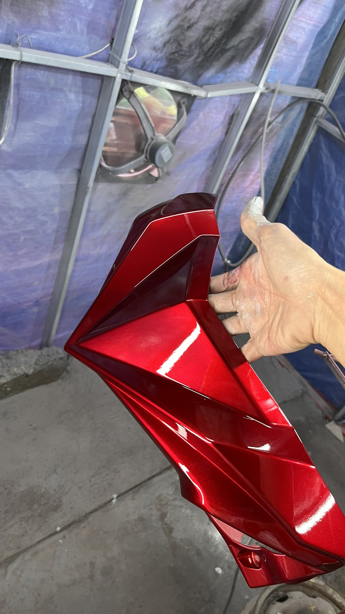
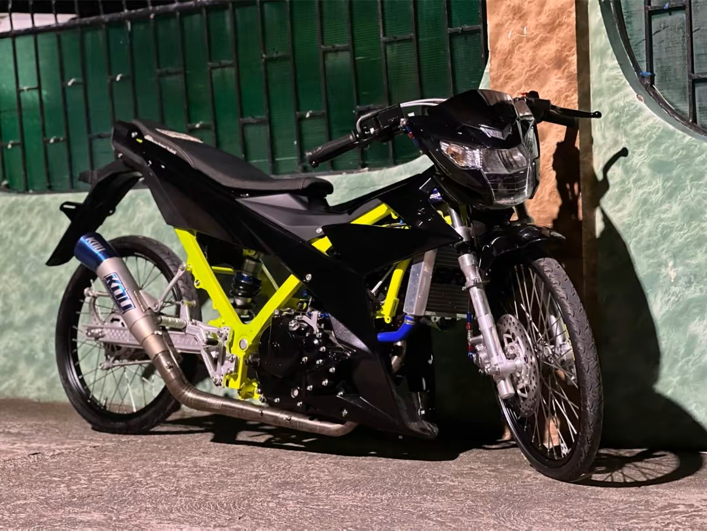
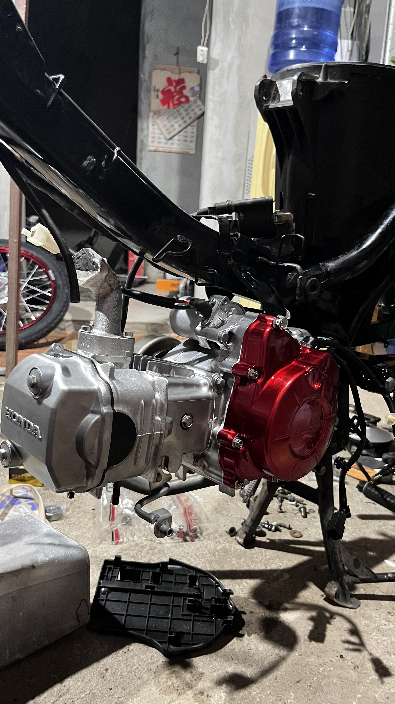
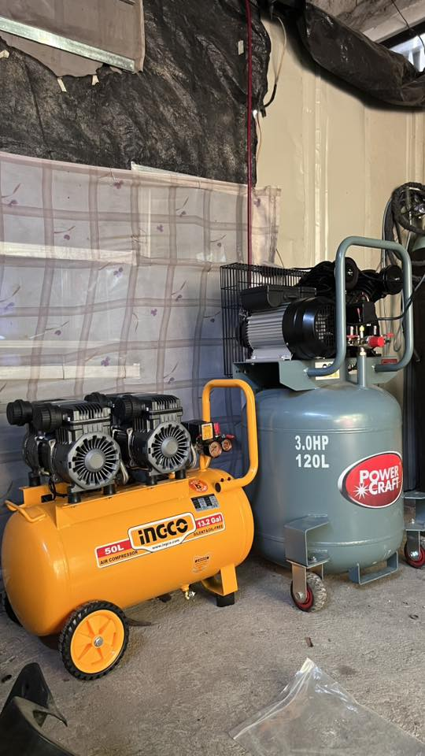

Est. 2025 // Built for Performance
From high-end multi-stage candy paint setups to full mechanical restoration and custom tool fabrication—we bring elite execution to every single build.
Driven by a raw passion for motocross and high-end automotive mechanics, J Custom Garage was established to bridge the gap between heavy-duty engineering and pristine visual design. What started out as building custom workshop machinery from salvaged metals quickly grew into a full-scale specialized shop environment.
We don’t believe in cutting corners. Whether it's dialing in the precise fluid dynamics of a custom 1.0mm spray gun configuration, calculating exact mixing ratios for flawless deep metallic reflections, or rebuilding engines from the crank up, our execution is absolute.
Industrial-grade execution meeting track-ready performance standards.
Specializing in flawless multi-stage layouts, deep Candy finishes, and heavy metallics. Sprayed with custom modified setups for ultra-fine atomization and an absolute mirror-smooth clear coat finish.
Bespoke metalwork tailored to specialized shop demands and performance bikes. From custom double-frame rotating painting stands to heavy-duty parts racks and modified frame configurations.
Complete mechanical diagnostics, engine tear-downs, component refreshing, and performance tuning built to withstand the punishing environments of competitive motocross tracks.
Real builds. Flawless reflections. High-pressure reliability.




Ready to level up your bike's layout, clear coat depth, or engine performance? Drop your details or stop by our headquarters directly in Sibulan.